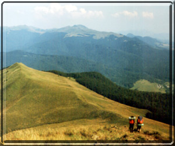

Bieszczady
Informacje ogólne

Bieszczady zajmują najbardziej na południowym-wschodzie wysunięty skrawek Polski. Stanowią one częsć głównego łuku karpackiego i są pierwszym członem Karpat Wschodnich, zaczynających się od doliny Sanu, Osławy, Osławicy i Laborca. W granicach Polski znajduje się jedynie skrajnie zachodnia ich częsć, czyli Bieszczady Zachodnie przechodzące ku zachodowi (za Przeł. Łupkowską) w Beskid Niski, natomiast ku wschodowi (za Przeł. Użocką) w Bieszczady Wschodnie. Po południowej stronie wododziału karpackiego, na Słowacji noszą one nazwę Bukovske Vrchy. Podział turystyczny tych gór kłóci się często z jednostkami fizycznogeograficznymi. Na szczególną uwagę zasługuje przyroda bieszczadzka. Klimat Bieszczadów, jest dość zróżnicowany i ściśle wiąże się z rzeźbą terenu i wysokością n.p.m. Wyraźny jest tu wpływ kontyntntalnych mas powietrza napływających znad Europy Wschodniej i niosących niskie temperatury w zimie i wysokie latem. Miesza się ono z suchym powietrzem znad Nizin Węgierskich. Średnia temp. roczna wynosi 5 C, w lecie osiąga ona 16 C a w zimie spada do -5 C. Opady roczne od 800 mm w rejonie Przedgórza Bieszczadzkiego osiągają swe maksimum w rejonie pasm okalających Cisną i wynoszą tam 1150 mm. Największa ilość opadów przypada na lipiec (140-150 mm). Stosunkowo suche i dogodne do uprawiania turystyki są: styczeń i luty oraz przełomy maja i czerwca oraz sierpnia i września. Pokrywa śnieżna zalega w Bieszczadach przez 150-200 dni osiągając grubość w wyższych partiach nawet do 200-300 cm.